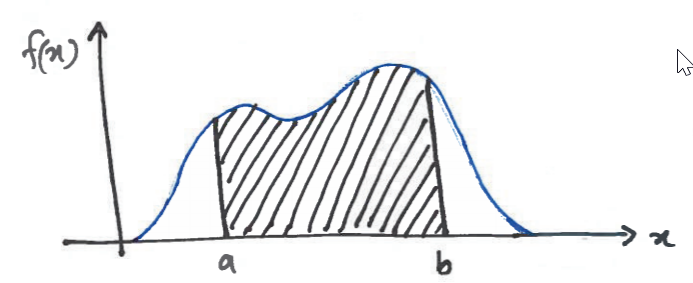

Let X be a continuous RV, then pdf of X is f(x) such that any 2 numbers a and b with a < b

Probability that X takes on a value in the interval [a,b] is the area above this interval and under the graph of the density function as given in figure:
The cdf of a continuous RV X is defined for every number x by
Rest on Chapter 4.2 on canvas (omitted as most are examples)